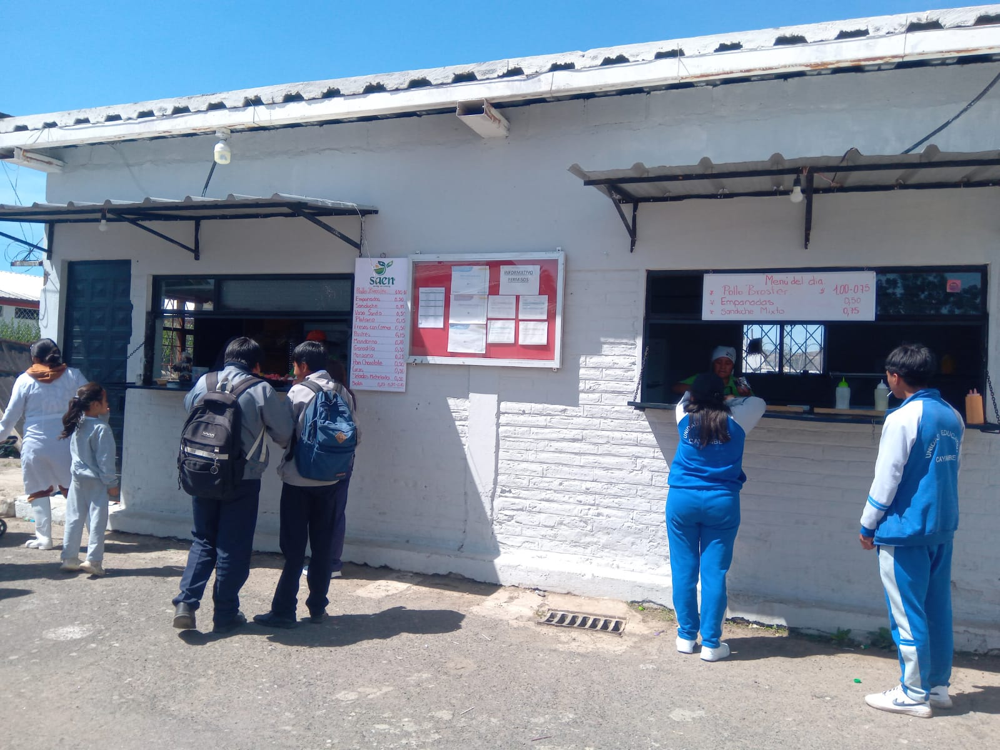

BAR
El bar escolar es un servicio que ofrece alimentos y bebidas a los estudiantes, profesores y personal del colegio. Subjetivo es proporcionar una opción conveniente y saludable para comer y socializar durante el día.
FUNCIONES:
1. El bar cuenta con un cómodo comedor.
2. frecer desayunos, almuerzos y meriendas.
3. Fomentar hábitos alimenticios saludables.
4. Crear un ambiente acogedor para socializar y relajarse.
5. El bar esta en la mañana, tarde, noche, y fines de semana.
Importancia del bar escolar:
El bar escolar es un servicio esencial en un colegio.
 VOLVER A LA PAGINA...